桃園舊火車站的地下，埋藏著一段跨越約 4,500 年的故事：從史前的訊塘埔文化，到清代劉銘傳推動興建的鐵路，再到日治時期的車站與戰後的排水系統。這是「桃園舊火車站及鐵道遺構列冊考古遺址」的教育推廣活動，每場限 30 人、限時開放，戴上安全帽與反光背心，直接站進正在發掘的工地裡，近距離看這些遺構與出土文物。
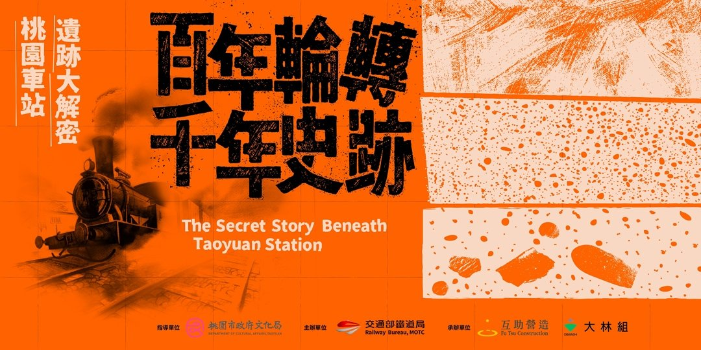
活動主視覺：「百年輪轉・千年史跡」，英文副標 The Secret Story Beneath Taoyuan Station。
01進入工地：先穿上背心與安全帽
地點：考古六區入口 ｜ 約 14:00–14:10
- 導覽路線全程在施工與發掘現場內，不能離開動線，欄杆也不能倚靠；最前方設有集合點，先走到底拍大合照，再沿路一站一站回頭講解。
- 全程約 50 分鐘至 1 小時，停留三個主要導覽點，最後回到入口處看出土文物。
- 藍老師特別提到，他不是現場的發掘人員，而是長年關注桃園鐵道史的在地文史工作者；也因為他的一次發現，這處遺址才被注意到。
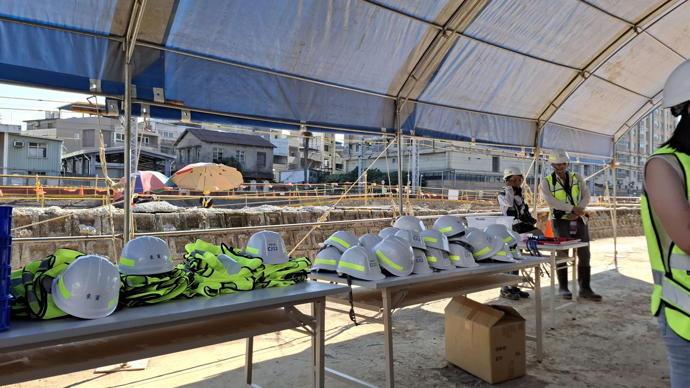
入口帳篷下整齊排放的安全帽與反光背心，領取穿戴後才能進入考古現場。
要親臨才有的體驗這裡同時是鐵路地下化的施工現場，平時封閉不對外開放。活動當天才能在專業導覽下走進去，而且參加者全程穿著安全裝備，與考古人員在同一片地面上。
02緣起：一塊「二爪磚」
地點：集合點 ｜ 約 14:11–14:13
- 2016 年，藍老師在車站第二月臺後方發現了一些特別的紅磚與黑瓦。磚面有兩條爪痕，考古上稱「二爪磚」。
- 二爪磚大量用於 1908 年通車的西部縱貫鐵路，橋梁、月臺、隧道都看得到；他判斷「這裡不單純，下面應該有東西」，便向文化局提報為考古遺址。
- 後來開挖時證實，那批磚屬於車站使用的廁所，現已移置到捷運 G07 站址一帶，今天看不到了，但它是整座遺址被發現的起點。
03桃園車站的五代站體
地點：集合點 ｜ 約 14:13–14:17
| 世代 | 時間 | 特色 |
|---|
| 第一代 | 1891 | 清代劉銘傳興建的臺灣第一條鐵路所設的「桃仔園票房」，位置約在現今軌道願景館旁，曾留下一幅日軍隨軍畫師描繪的珍貴插畫。 |
| 第二代 | 1901–1902 | 鐵路改線後，車站移到現今舊站一帶；僅存一張老照片。 |
| 第三代 | 1913 | 和洋混合風格的華麗站體，講者還親手繪製了復原圖。 |
| 第四代 | 1961–1962 | 多數人搭過的混凝土站體，因 G07 工程而停用。 |
| 第五代 | 臨時站 | 現在看到的灰色臨時站體。 |
- 另一段趣聞：1968 年通車的林口支線，2005 年曾開放客運服務，當年有學生搭這班「免費火車」上學。
- 講者提醒：1901 年之後，這片考古六區才成為車站站內的一部分；清代的鐵路是單線，當時還在站外。
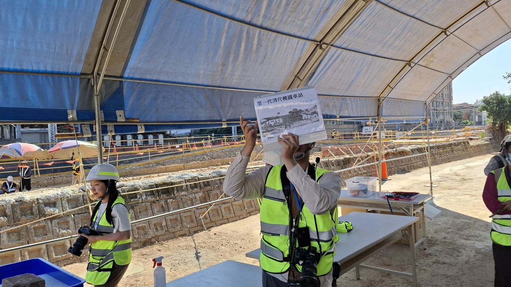
導覽員舉起歷代車站的老照片與復原圖，逐代說明站體位置的變遷。
04清代臺灣鐵路：最珍貴的一段軟石路基
地點：集合點至導覽第一站 ｜ 約 14:20–14:28
- 地面上一排整齊的軟石路基，就是 1891 年劉銘傳鐵路通到桃園時的單線樣貌；石面上有規律的凹槽，應是擺放枕木的位置，枕木直接放在石基上，再鋪鐵軌。
- 往東延伸之處有被後來工程破壞的痕跡，不同年代的鐵路工程在此層層疊壓。
- 鐵路旁還能看到成排的木樁，至今無法確定是信號指示，還是改線時的基準點。
- 清代鐵路從臺北翻越龜崙嶺而來，展示板上的老照片中，火車造型與復刻的三號車型相近。
- 地平高度有線索：越往這一側走，清代路基離現在地面越近；往入口走則越深。這是因為日治時期與戰後曾大量填土，清代桃園的原始地平，其實就在這層軟石的高度。
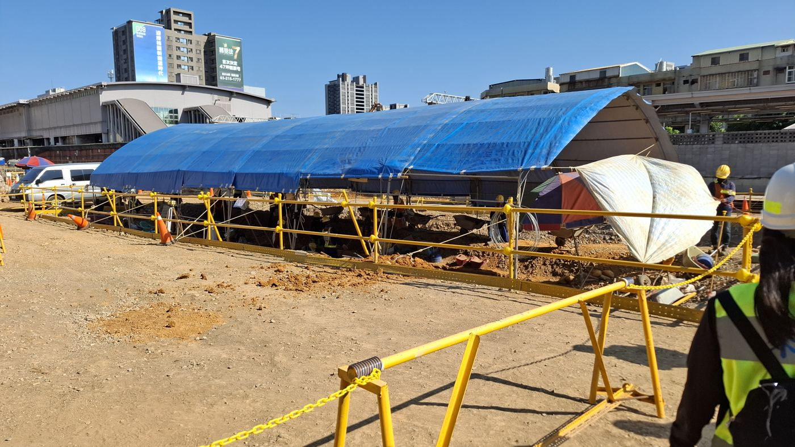
前方藍色帳篷是仍在發掘的「考古五區」，預計會出現與六區相似的遺構。
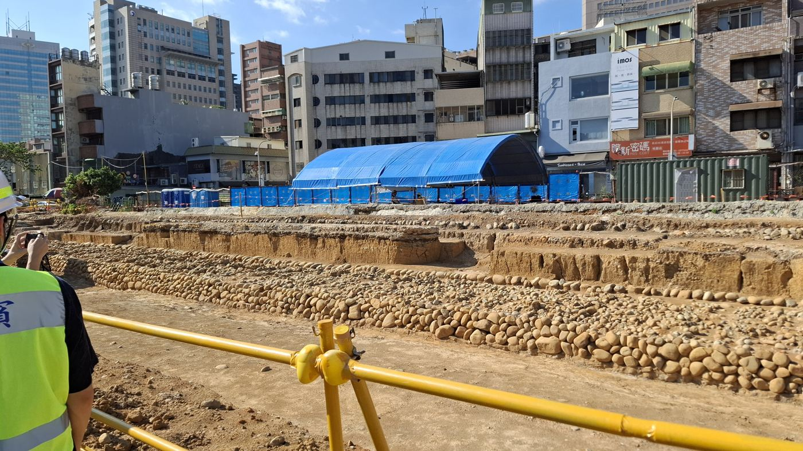
成排卵石與軟石構成的清代鐵路路基，遠處就是桃園老城區的街屋。
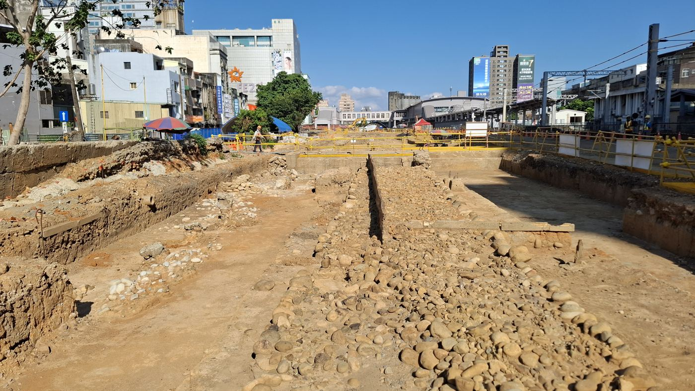
路基中央可見一條筆直的線，沿著軟石上的凹槽可想像枕木與鐵軌的位置。
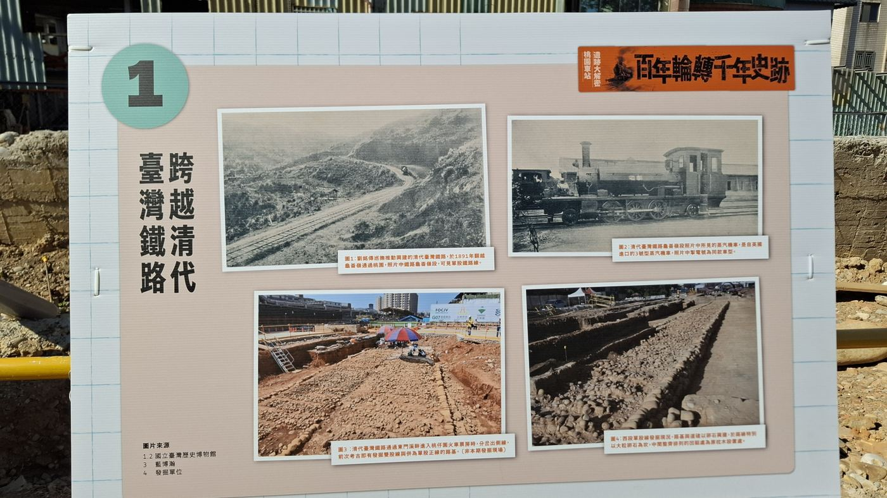
現場展示板「跨越清代臺灣鐵路」，以老照片對照出土現況。
全臺罕見清代鐵路的實體軌道證據極少，而桃園車站是少數清代與日治時期鐵道完全疊合的位置。同一個地點可以同時看到兩個時代的鐵路，加上現場出土狀態完整，是在其他地方很難複製的場景。
05輕便軌道與弧形涵洞：只剩這裡看得到
地點：導覽第二站 ｜ 約 14:30–14:38
- 腳下的混凝土構造，過去其實是一條水溝，同時也是桃園到大溪的雙軌輕便軌道穿越縱貫鐵路的位置。
- 輕便車完全靠人力推動，軌距只有 495 公釐（約 49 公分），與縱貫鐵路的 1067 公釐不同；路線大致沿今天的介壽路進城，轉彎後越過此處到前站，終點在今天桃園客運總站一帶。
- 仔細看，涵洞呈弧形，旁邊還有石砌構造，應是 1901–1902 年改線時所建的橋臺，上方鋪鋼梁讓火車通過，輕便車與排水則從下方通行。
- 講者說明，輕便軌道一拆就沒了，臺灣留下的遺構非常少，整個大桃園地區能確實看到輕便軌道痕跡的，就是這裡，而且它還與縱貫鐵路立體交會。
- 講者也提到，這座橋臺的寬度為單線，1935 年的涵洞則是剛好雙線寬度，到日治後期這裡已接近站外，軌道已收攏為單線或複線。
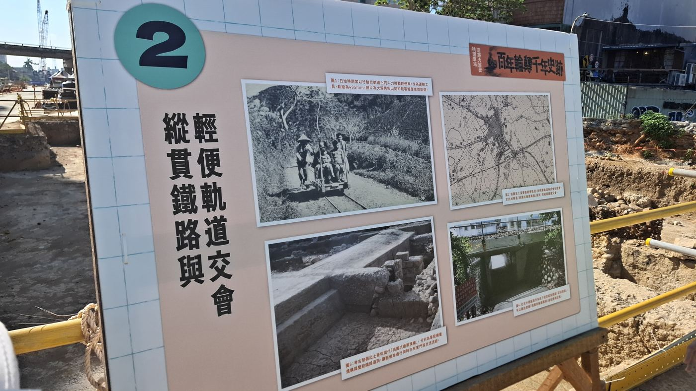
展示板「輕便軌道與縱貫鐵路交會」：老照片中的人力推車與出土涵洞並列對照。
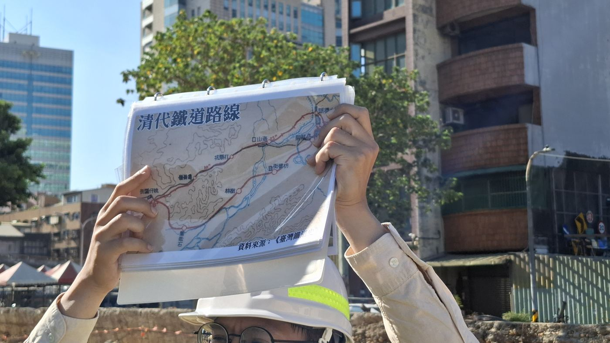
導覽員舉起「清代鐵道路線」地圖，說明鐵路如何從臺北經龜山進入桃園。
061902 年的改線：為什麼清代路基被保存下來
地點：導覽第二站 ｜ 約 14:32–14:36
- 1902 年，日本人把原本走龜山的清代路線改往南邊，經鶯歌、樹林一帶再接到桃園。
- 施工時把清代鐵軌與枕木拔除，直接在原路基上填土抬高，再做上方的橋臺；這個填土，反而把清代鐵路封存在地底，保存至今。
- 講者並以約一公里多外、至今仍在使用的另一座鐵道橋為證：同樣的石砌橋臺，旁邊後來加建了鋼筋混凝土橋臺；1903 年縱貫鐵路改為雙線後，南北向列車就不必再進站交會，與今天的行駛方式相同。
- 橋臺旁還有細緻的水泥打毛裝飾，講者期待這個接縫處或許還藏有日治時期的題字。
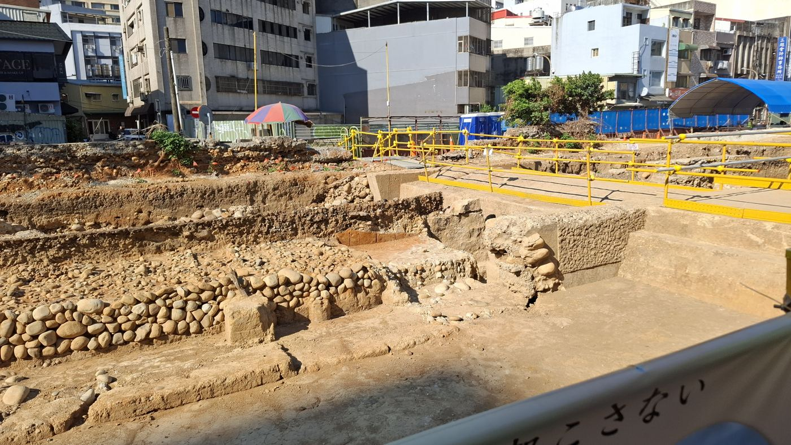
石砌的橋臺遺構與卵石層，是 1901–1902 年改線工程留下的痕跡。
07站內排水溝：1960 年代的紅磚水路
地點：導覽第三站 ｜ 約 14:39–14:47
- 一條很長的紅磚排水溝，依圖面判讀約 1960 年興建，是桃園車站站內軌道排水用；火車最怕積水，軌道淹水列車就會停駛。
- 水溝上方原有一排溝蓋，下方每隔約一公尺還有孔洞，讓水可以在溝內外互相流通。
- 排水往北接到輕便軌道下的涵洞，再向東流過站前廣場、日治時期的桃園橋，最後進入東門溪；這條河如今已被城市蓋住，只能從排水系統看到它的痕跡。
- 水溝轉折橫跨清代鐵路時，還壓破了清代路基，由此可知水溝是後來才蓋的，這也是不同年代遺構疊壓的實例。
- 現場並放有四種紅磚的對照：有兩條爪痕的二爪磚、表面完全無紋路的素面磚（曾被誤認為日治時期，後因圖面確認為 1960 年代）、臺灣電話公司的 TR 磚，以及一般常見的實心磚。
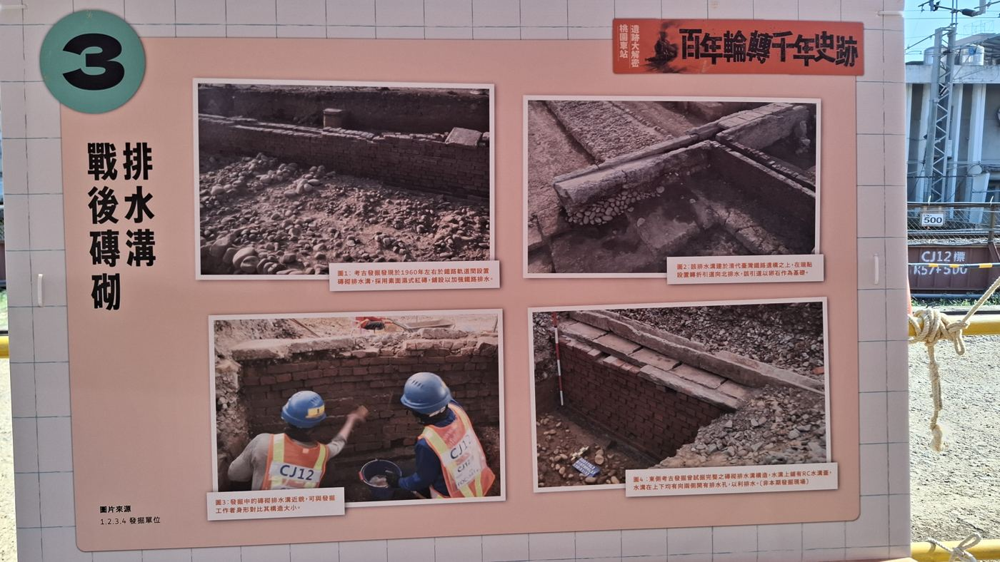
展示板「排水溝・戰後磚砌」，說明水溝的位置與構造。
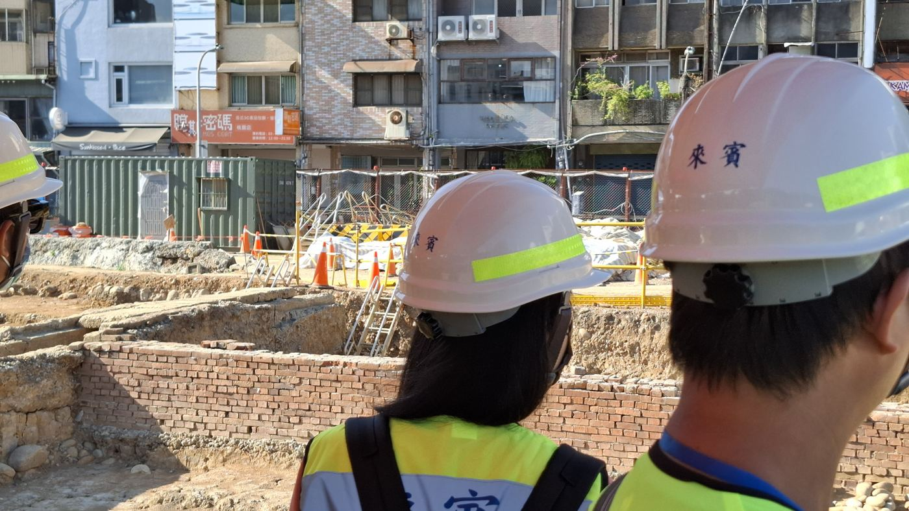
紅磚排水溝與旁邊並行的鐵軌遺跡。
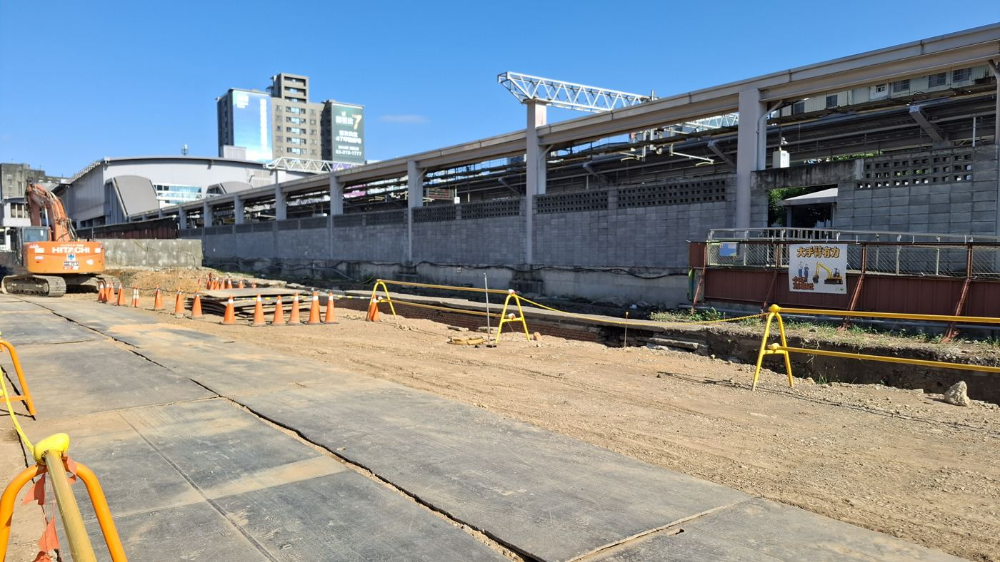
遠處的長牆與路面，即戰後舊月臺的位置；月臺面明顯高於我們腳下的地平。
08出土文物：鐵道零件與生活遺物
地點：回到入口處的展示桌 ｜ 約 14:47–14:53
- 鐵道零件：早期固定鐵軌的道釘（打在枕木上）、後期改用的扣夾；兩種不同年代的固定方式在現場都有發現，還有電線用的礙子。
- TR 磚：日治時期臺灣電話公司生產的紅磚。
- 陶瓷碎片：青花瓷碗底、清代與日治時期的碗片；其中鶴紋碗是日治時期很有代表性的生活器物，一說在北投與南投都有燒製，可能是臺灣在地產品，在地面撿到它，基本上就能判斷是日治時期。
- 錢幣：嘉慶通寶出土自 G07 工區的清代墓葬；展桌上還有日治時期的小額硬幣（十錢可買報紙或一塊明治巧克力）與戰後面額很大的五元硬幣。
- 安瓿瓶：醫院仍在使用的注射藥劑玻璃瓶，連瓶中的液體都完整保存。附近的信東製藥自 1950 年代起設廠，講者推測可能出自那裡。
- 講者的觀察是：這些器物正是過去在這裡生活、旅行、等車的人遺落的東西，「就跟我們現在一樣，不小心錢包掉了，就在這裡被放了幾十年」。
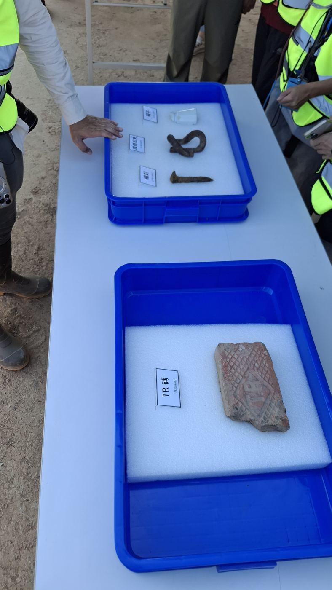
展示桌上的鐵製零件與磚塊標本。
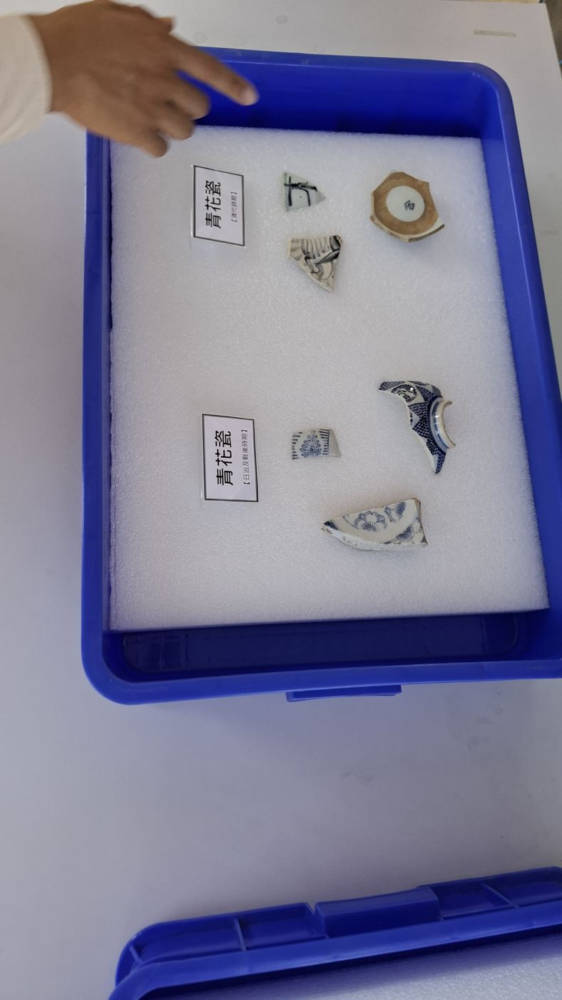
青花與日式碗片等陶瓷碎片標本。
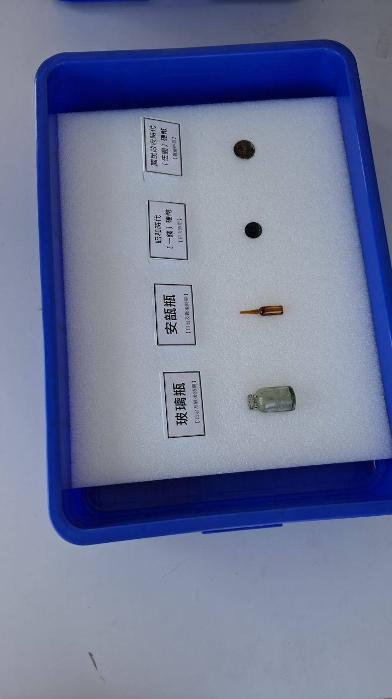
錢幣與小型器物：每一件都附有標籤，可以湊近看。
稍縱即逝文物就擺在現場桌上，讓人近距離觀察，不隔玻璃。這類展示僅在導覽當天出現，之後便回到考古單位保管。
09最後一站：1901 年橋臺的石塊與保存的可能
地點：入口旁、帳篷下 ｜ 約 14:53–15:00
- 入口旁散置的石塊，就是前面提到的1901 年橋臺（暗渠形式）的石材。橋在 1901–1902 年蓋成後不久即被破壞，石塊由考古人員搬到此處展示。石面有黑色塗記，可能是建橋或拆橋時留下的標記，有些甚至像是數字「50」，仍是未解之謎。
- 日本新橋：1872 年日本第一條鐵路（新橋—橫濱）通車，日本不但復原站體與月臺，還依文獻復刻當年的軌道與扣具；2019 年發現的「高輪築堤」石砌路基，也被解體後陳列在新橋站前，搭配一臺蒸汽火車。
- 巴黎巴士底站：發現巴士底監獄遺構後，與地鐵站共構保存。
- 臺中車站後站：工程時發現火車檢修道遺構，為此修改站內設計，特意保留展示。
- 目前這些考古現象，是以「列冊追蹤」的形式存在，雖經審議認為需進入指定程序，但至今尚未公告，所以未來能否原地保存、如何保存，目前都還沒有定論。
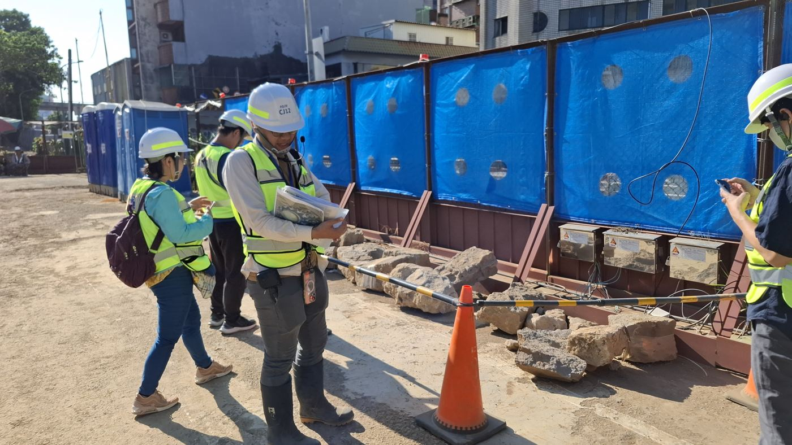
藍色圍籬前散置的橋臺石塊，導覽員正在說明石面上的標記。
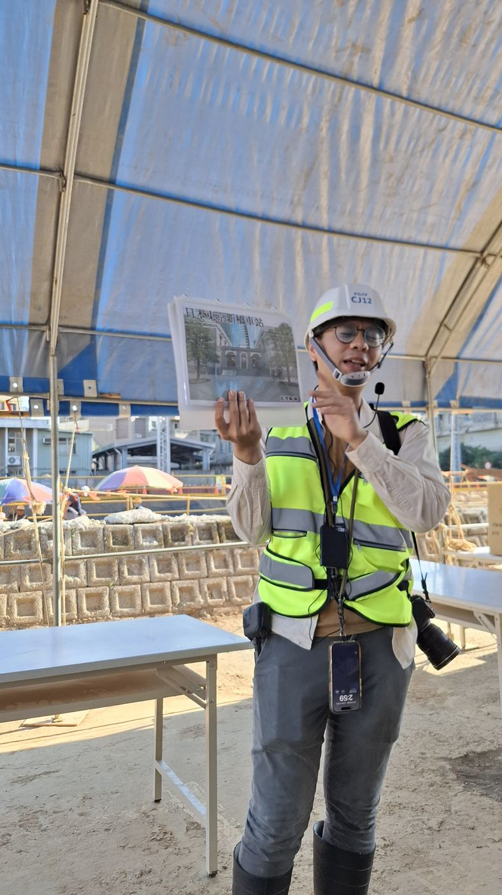
回到帳篷下，導覽員以日本、法國與臺中的保存案例作結：「希望今天看到的，不會是大家最後一次看到它。」
這份記錄的意義遺址的未來仍未確定，這次限時開放的現地導覽，很可能是公眾能以這種距離看見完整遺構的少數機會之一。參加者並被邀請填寫問卷，把「應該挖掉，還是想辦法保存」的意見交給主辦單位。
導覽者｜藍博瀚（陽明一街實驗工坊）
桃園人，國立成功大學建築學系碩士、國立中正大學歷史學系學士，2019 年完成《日治時期桃園街空間的現代化過程》論文。長期以講座、導覽與廣播分享桃園地方史，擅長參與式文化資產保存、文化資產調查與臺灣建築史。
指導單位：桃園市政府文化局｜主辦單位：交通部鐵道局北部工程分局｜承辦單位：互助營造・大林組